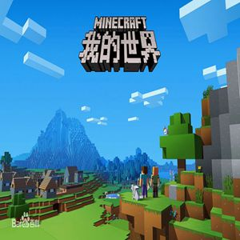
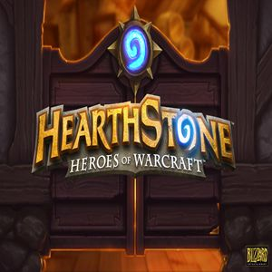
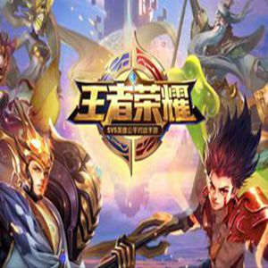
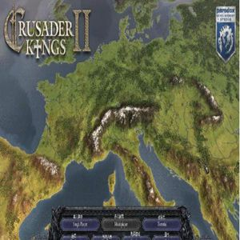

Games

Minecraft is a sandbox video game created by Swedish game developer Markus Persson and released by Mojang in 2011.
The game allows players to build with a variety of different blocks in a 3D procedurally generated world, requiring creativity from players.
Other activities in the game include exploration, resource gathering, crafting, and combat.
Multiple game modes that change gameplay are available, including—but not limited to—a survival mode, in which players must acquire resources to build the world and maintain health, and a creative mode, where players have unlimited resources to build with.
Minecraft and me
---Minecraft was the game that I played for the longest time.
---I played Minecraft when I was in the sixth and seventh grade.
---At first,I acted like a naughty kid in the game and often destructed others' house.
---I no longer did bad things in the game and became a good builder and designer.
<

Hearthstone is a free-to-play online digital collectible card game developed and published by Blizzard Entertainment. Originally subtitled Heroes of Warcraft, Hearthstone builds upon the existing lore of the Warcraft series by using the same elements, characters, and relics. The game features cross-platform play, allowing players on any supported device to compete with one another, restricted only by geographical region account limits.
Hearthstone and me
---I played Hearthstone in the eighth grade and also nearly a year in the high school.
---I rarely get good cards from card bags.(蓝天白云)
---I played Druid and Paladin in the game most.
---My best record is the 4th level.

Honor of Kings is a 3D, third-person, multiplayer online battle arena (MOBA) style game for mobile. Players compete in these matches which on average last for around 12 - 18 minutes. Players aim to destroy turrets on the map, in order to destroy the core.
Honor of Kings and me
---I played this game in the ninth grade and now.
---There is often no Support in the team,so I played Support mostly.
---Sometimes I also played the Top.
---I haven't got a penta kill yet.

Crusader Kings II is a grand strategy game set in the Middle Ages, developed by Paradox Development Studio and published by Paradox Interactive. Through the strategic use of war, marriages and assassinations among many other things, the player works to achieve success for their dynasty.
Crusader Kings II and me
---I played the game in my high school times.
---Only available on computers.
---As a history lover,I enjoy the feeling of controling my own land in this game.
---When it comes to marriage in this game,you can marry your cousin or even you sibling.
(Though I never play like that!!!!!)